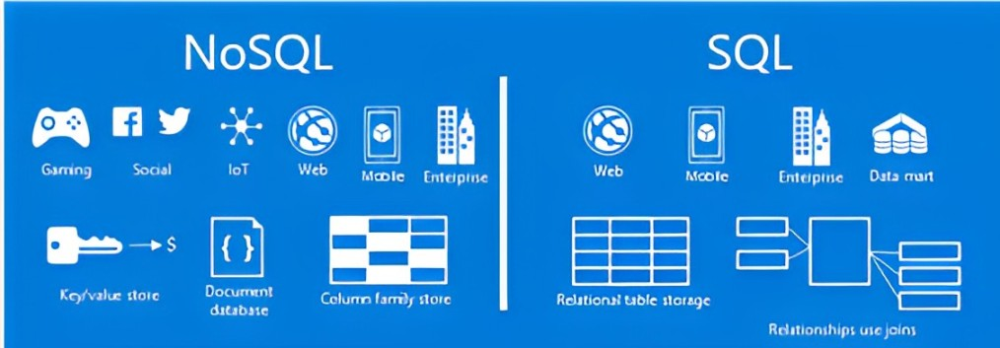

Um banco de dados é uma coleção organizada de informações ou dados, geralmente armazenados eletronicamente em um sistema de computador. Esses dados são estruturados de maneira que possam ser facilmente acessados, gerenciados e atualizados. Em um sistema de banco de dados tradicional, como o SQL (Structured Query Language), os dados são organizados em tabelas relacionais, com esquemas predefinidos e um rigoroso modelo de consistência.
Você não utiliza rede social? Ou conhece alguém?
Logo que nós realizamos o cadastro, queremos entrar na nossa conta, como é possível verificar se os dados são compatíveis com o do registro? nossos dados ficam salvos a onde? A resposta é: Em um banco de dados!
O NoSQL é uma abordagem alternativa ao armazenamento e recuperação de dados que difere dos bancos de dados relacionais tradicionais. Enquanto os bancos de dados relacionais seguem um modelo rígido de tabelas e esquemas, o NoSQL permite uma estrutura de dados mais flexível e escalável. Isso é especialmente útil em ambientes onde os dados são não estruturados ou semi-estruturados.
Os bancos de dados NoSQL permitem armazenar uma variedade de tipos de dados, desde documentos JSON até grafos e pares de chave-valor. Isso é ideal para lidar com dados não estruturados ou semiestruturados.
NoSQL foi projetado para escalabilidade horizontal, o que significa que você pode adicionar facilmente mais servidores para lidar com um aumento na carga de trabalho. Isso é crucial para aplicativos modernos com grandes volumes de dados e tráfego.
Em muitos casos, os bancos de dados NoSQL podem oferecer melhor desempenho em comparação com os bancos de dados relacionais, especialmente em cenários de leitura intensiva ou quando a estrutura dos dados é altamente variável.
A arquitetura distribuída e a capacidade de armazenar dados próximos aos usuários finais podem reduzir a latência, proporcionando uma experiência mais rápida para os usuários.
Muitos bancos de dados NoSQL sacrificam a consistência forte em favor da disponibilidade e da tolerância a falhas. Isso significa que, em alguns casos, pode haver uma pequena janela de tempo em que os dados podem ser inconsistentes entre diferentes nós do banco de dados.
Comparado aos bancos de dados relacionais, o NoSQL é relativamente jovem e, em alguns casos, pode não ter a mesma maturidade em termos de ferramentas, suporte e comunidade.
A flexibilidade do NoSQL pode tornar a modelagem de dados mais complexa, especialmente em cenários onde a estrutura dos dados é altamente variável ou imprevisível.